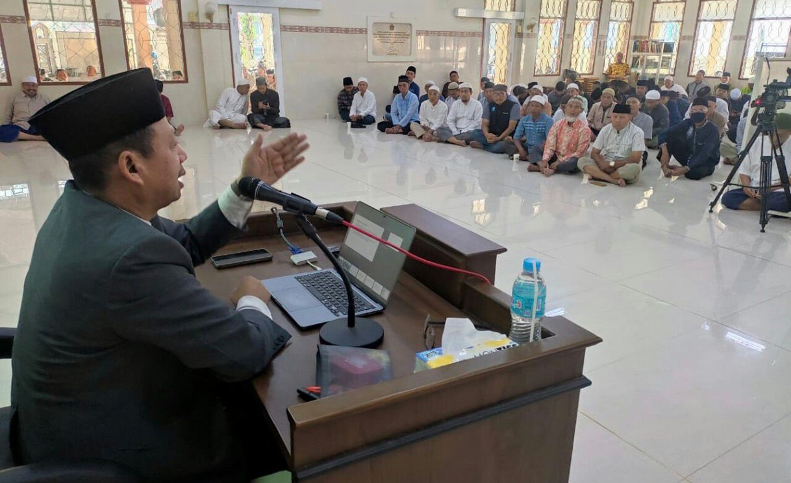
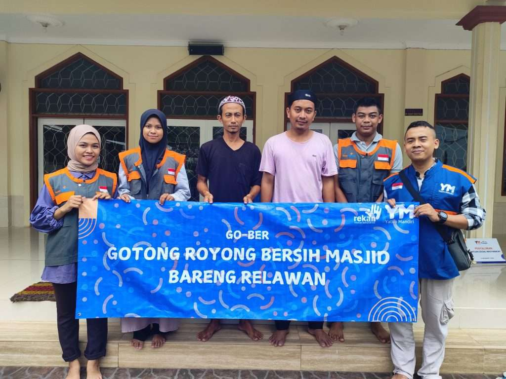
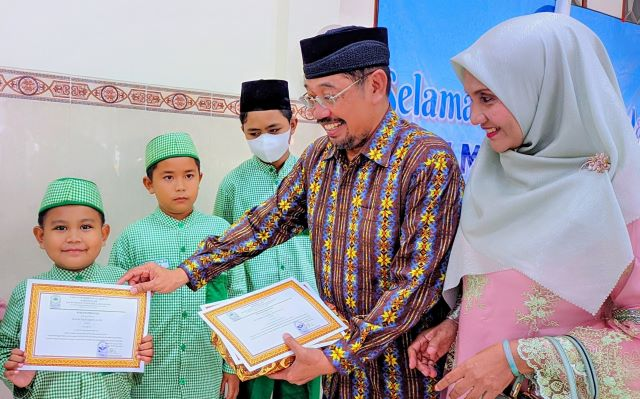

Masjid Darussalam
Tuban
Jl. Basuki Rachmad, Kutorejo, Kebonsari, Kec. Tuban, Kabupaten Tuban, Jawa Timur
Jl. Basuki Rachmad, Kutorejo, Kebonsari, Kec. Tuban, Kabupaten Tuban, Jawa Timur
Masjid Darussalam Tuban adalah tempat ibadah dan pusat kegiatan keagamaan masyarakat Muslim di Kabupaten Tuban, Jawa Timur, Indonesia. Masjid ini berdiri sejak tahun 2000 dan berlokasi di Jl. Basuki Rachmad, Kutorejo, Kebonsari, Kec. Tuban, Kabupaten Tuban, Jawa Timur. Masjid ini terletak di depan Lingkar Pertamina, DK. Mudiharjo, Rahayu, Tuban. Bangunan ini dibangun di atas lahan wakaf dengan tujuan utama menyediakan ruang yang layak dan nyaman untuk kegiatan ibadah, belajar, dan pertemuan umat Islam di sekitar wilayahnya
Read More


satunya bertajuk “Menjadikan Iman Sebagai Kompas Kehidupan,” menghadirkan pembicara untuk mengajak jamaah merenungi arah hidup berdasarkan nilai-nilai keimanan.
Masjid menjadi tempat berkumpulnya relawan dan jamaah untuk membersihkan area masjid baik dalam maupun luar ruangan, sebagai bentuk kepedulian terhadap fasilitas ibadah dan lingkungan.
Takmiriyah Masjid Darussalam mengadakan kegiatan pengajian untuk memperingati Tahun Baru Hijriyah, dihadiri oleh jamaah termasuk ibu-ibu majelis taklim serta santri TPQ, lengkap dengan penyerahan hadiah peserta lomba.